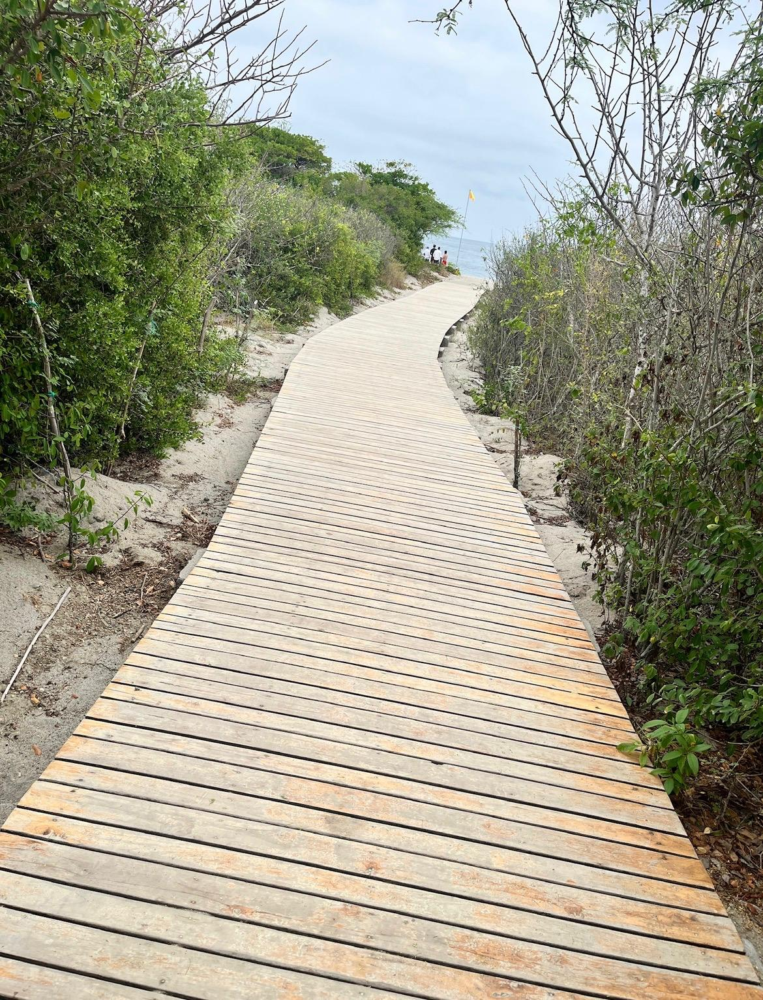

EL INICIO
Todo comenzó aquí.
Nos conocimos gracias al trabajo, casi como una simple coincidencia. Un proyecto nos puso en el mismo camino y, sin saberlo, detrás de reuniones, conversaciones y días compartidos comenzaba a escribirse una historia que ninguno de los dos imaginaba.
Lo que empezó como algo profesional poco a poco se convirtió en algo mucho más especial, ya que aveces las mejores historias no comienzan con un “érase una vez”, sino con un simple encuentro que termina cambiándolo todo.
